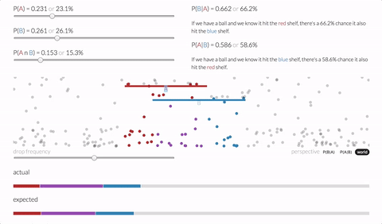
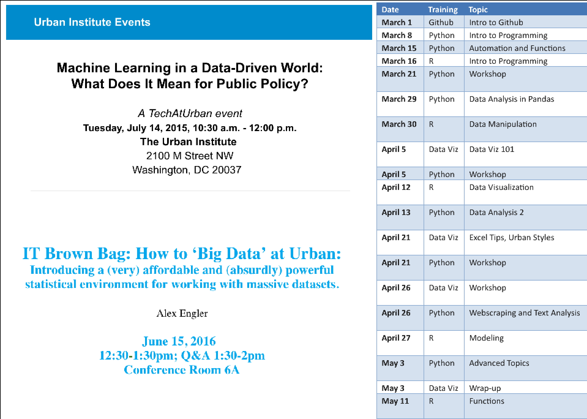
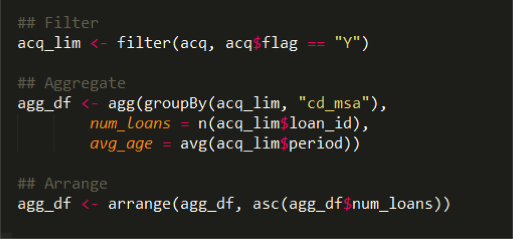
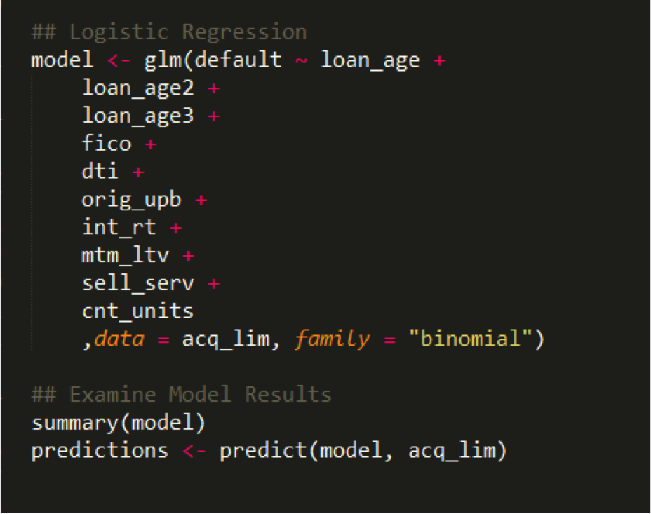
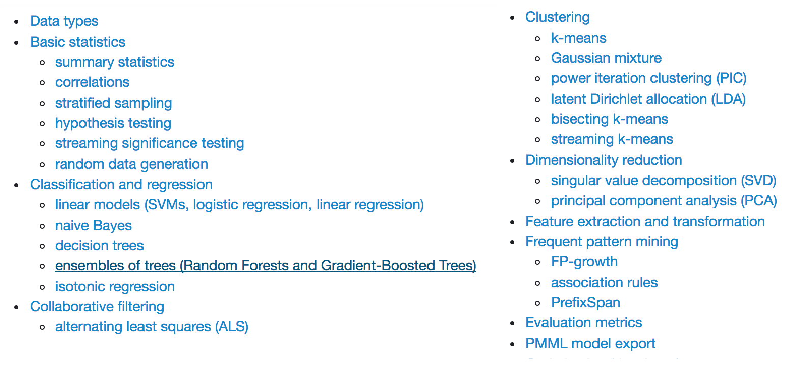
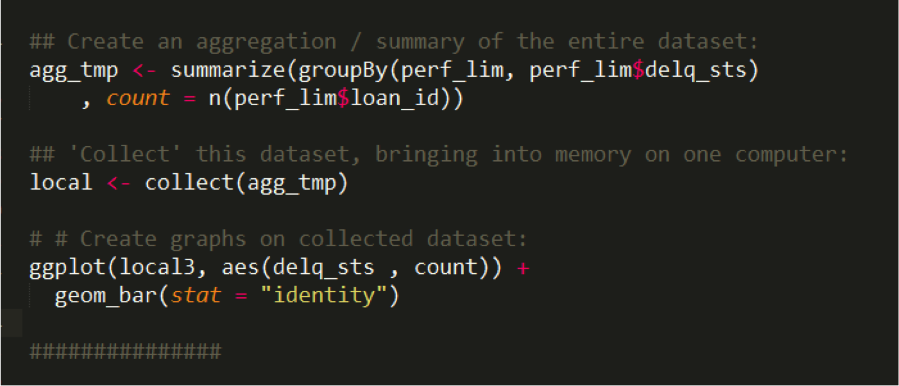
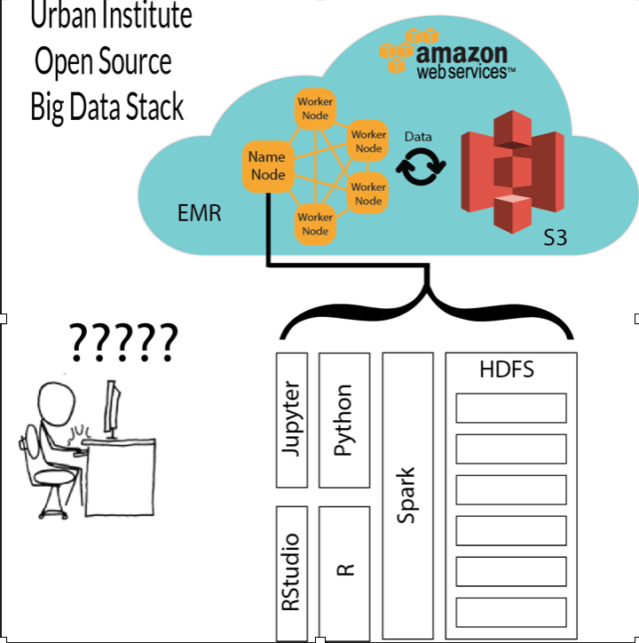

The State of Spark for
Big Data Social Science
Me
- Alex, hi.
- Civic Data Scientist @ Urban Institute
- Professor of Data [Viz & Science] @ JHU & GU
- Data Viz for Policy Analysis
- Advanced Data Viz - Interactive Web Graphics
- Data Science for Public Policy
- @alexcengler
Data Technology
for Public Policy Research
in a Modern Thinktank


Prison Population Forecaster
Immigration and Residential Segregation
Tax Policy Center Model Modernization - Process
- Version-Control with GitHub
- Cloud-deploy on AWS;
- Containerize with Docker;
- Parallelize with R;
Tax Policy Center Model Modernization - Applications
- Bootstrapping of microdata (IRS SOI PUF);
- Random draws from parameter distribution;
- Gridsearch methods for optimal tax policy;
[Submitted an LOI proposing the implementation of these methods]
Administrative Synthetic Data
Data Science Education
Which has led to Data Science Projects
- Machine Learning for measuring Tweet Sentiment aimed at policy officers/departments;
- Topic modeling w/ NLP of nursing survey;
- Launching Shiny Applications for Model Results;
- Student to School Routing Distance;
Spark Social Science

Our Problem
- Big Data
- Small Budget
- Advanced Statistics
- Programming Limitations
'Big Data'
- ~One Billion Rows (Growing to low tens of billions);
- Currently ~1TB of Data;
- Couple Hundred Columns;
- Ideally, this, or even several orders of magnitude higher, should be trivial.
Small Budget
Affordability from Elasticity
Standing Clusters - either in Cloud or on Premise are unaffordable.
Advanced Statistics

Programming Limitations
- Preference for SAS/STATA
- Some R-Users, a few Python-Users
- Java/Scala/C are off the table
Accessibility as a General Concern
- No Linux Command Line;
- No Cloud Expertise;
- No SSH/Telnet Experience;
Our Solution
- Apache Spark
- R/Python with IDEs in Browser
- AWS Elastic MapReduce
Apache Spark
- Distributed Memory Framework for Big Data
- Written in Scala/Java but has R/Python APIs
- Good & Improving Statistical Methods
- Free & Open Source

Relatively Familiar Languages
Development Environments in Browser
- RStudio for R (SparkR)
- Jupyter Notebooks for Python (PySpark)
Reading in Data

Data Manipulation
Statistical Methods
Statistical Functionality
Histogram
Amazon Web Services (AWS) Elastic MapReduce (EMR)
- Elastic - Only Pay for Clusters During Use
- Fast - 10-12 Min Spin Up with Bootstrap
- Free Data Transfer From S3 (AWS Storage)
AWS EMR
Also Cheap:
Four R3.8X Large EC2 Instances:
- 244 GB Memory Each (~1TB Total)
- 32v vCPU Each (128 Total)
- 1300 GB SSD Storage
All for ~$10/Hour
Our Solution (Theory)

Our Solution (Reality)
New Problem - How do Researchers Use This?
- Create AWS Account
- Download PPM Key, Create PPK Key with PuttyGen
- Install AWS Command Line
- Reference Linux Command Line Bootstrap Script
- Install/Use Putty for SSH
- Run FoxyProxy for Portforwarding
Instead: AWS CloudFormation
Instead: AWS Command Line Interface

Data Security & Access
- Working towards FISMA Moderate
- Virtual Private Cloud
- Centrally Controlled Data Access in S3
All Project Outputs are on GitHub
Project Implications - Applied
- Faster iterations of data work;
- Working interactively w/ large admin datasets;
- Non-traditional data sources
- Zillow ZTrax
- Credit Card Data
- Satellite Data
- Internet of Things
Project Implications - Educational
Course: Advanced Big Data Methods using Spark
- Linux Bash & AWS Cloud
- Parallel Processing
- Hadoop & HDFS
- Spark & Distributed Memory
- Parallelized Statistical Methods